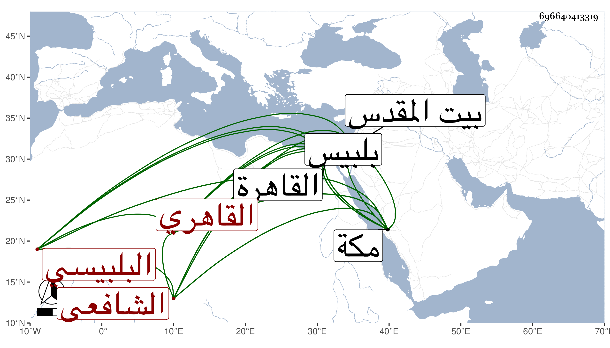

0902Sakhawi.DawLamic.ITO20230111-ara1.EIS1600.696640413319
Biography ID: 696640413319
603
محمد بن محمد بن محمد بن علي بن محمد بن محمد الشمس بن الشمس بن العماد البلبيسي الأصل القاهري الشافعي الماضي أبوه وجده . ولد سنة ثلاث وخمسين وثمانمائة ببلبيس ونشأ بالقاهرة في كنف أبيه فحفظ القرآن والعمدة والمنهاج وجمع الجوامع والجرومية وألفية النحو وعرض على خلق كالعلم البلقيني والمناوي والشمني والكافياجي والأقصرائي وأسمعه الكثير مع ولدي وغيره ومما سمعه البخاري على الشاوي واشتغل قليلا في الفقه ونحوه عند ابن قاسم وابن سولة وتعب في تربيته وسافر معه لمكة وبيت المقدس وغيرهما وتزوج في حياة أبيه واسترزق من الكتابة والتعليم في بيت ابن عليبة وكثر إحسانهم إليه وتنزل في سعيد السعداء والبيبرسية وغيرهما وتغير خاطر أبيه منه قليلا ثم تراجع وما مات إلا وهو يدعو له وجاور بعد موت أبيه بمكة ثم عاد وأسكنه الاستادار في المسجد الذي جدده بالخشابين وجعل له إمامته والقيام به .
